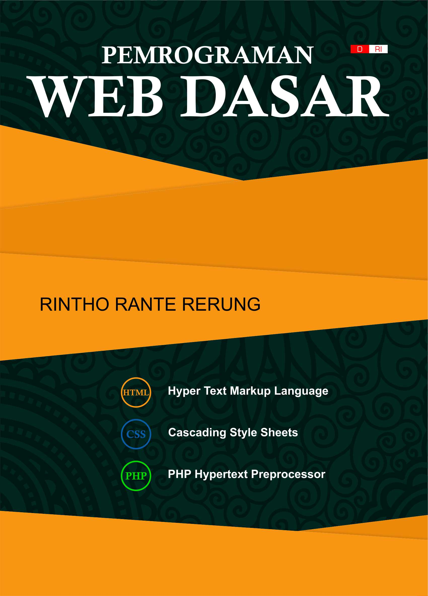

Bedah Buku: Negeri 5 Menara
Ditulis oleh: Ahmad Fuadi

Buku ini menceritakan perjalanan hidup Alif, seorang anak Minang yang menempuh pendidikan di pondok pesantren Madani.
Awalnya penuh keraguan, namun perlahan Alif menemukan makna perjuangan, persahabatan, dan kekuatan impian.
“Man Jadda Wajada – Siapa yang bersungguh-sungguh, dia akan berhasil.”
Kalimat itu menjadi semangat utama dalam buku ini. Kisah yang ditulis berdasarkan pengalaman nyata ini sangat menginspirasi,
terutama bagi pelajar yang sedang mengejar mimpi mereka. Penulis berhasil menyampaikan pesan-pesan moral melalui narasi yang hidup.
Buku ini cocok dibaca oleh remaja dan orang dewasa yang sedang mencari motivasi hidup. Cerita persahabatan, perjuangan, dan cinta belajar
membuatnya menyentuh dan relevan bagi pembaca di berbagai usia.
← Kembali ke Katalog
Bedah Buku: Anak Hebat
Ditulis oleh: Mulasih Tary

Anak Hebat adalah buku cerita anak yang menginspirasi tentang semangat, keberanian, dan kebaikan hati seorang anak dalam menghadapi berbagai tantangan sehari-hari. Melalui kisah yang sederhana namun penuh makna, pembaca diajak belajar tentang percaya diri, disiplin, rajin belajar, dan saling menghormati.
Dengan bahasa yang mudah dipahami dan cerita yang menyentuh, buku ini menanamkan nilai-nilai positif agar anak-anak tumbuh menjadi pribadi yang mandiri, bertanggung jawab, dan penuh semangat meraih cita-cita
“Anak hebat bukan yang selalu menang, tetapi yang selalu berusaha, berani mencoba, dan tidak pernah menyerah.”
Anak hebat adalah anak yang selalu berusaha menjadi lebih baik setiap hari. Ia rajin belajar, berani mencoba hal baru, dan tidak mudah menyerah saat menghadapi kesulitan. Dengan sikap disiplin, percaya diri, dan penuh semangat, anak hebat mampu meraih cita-citanya serta menjadi kebanggaan bagi orang tua dan lingkungannya.
Buku ini cocok dibaca oleh remaja dan orang dewasa yang sedang mencari motivasi hidup. Cerita persahabatan, perjuangan, dan cinta belajar
membuatnya menyentuh dan relevan bagi pembaca di berbagai usia.
← Kembali ke Katalog
Bedah Buku: Anak Hebat
Ditulis oleh: Buku Anak Jatim

Anak Hebat adalah buku cerita anak yang menginspirasi tentang semangat, keberanian, dan kebaikan hati seorang anak dalam menghadapi berbagai tantangan sehari-hari. Melalui kisah yang sederhana namun penuh makna, pembaca diajak belajar tentang percaya diri, disiplin, rajin belajar, dan saling menghormati.
Dengan bahasa yang mudah dipahami dan cerita yang menyentuh, buku ini menanamkan nilai-nilai positif agar anak-anak tumbuh menjadi pribadi yang mandiri, bertanggung jawab, dan penuh semangat meraih cita-cita
“Anak hebat bukan yang selalu menang, tetapi yang selalu berusaha, berani mencoba, dan tidak pernah menyerah.”
Anak hebat adalah anak yang selalu berusaha menjadi lebih baik setiap hari. Ia rajin belajar, berani mencoba hal baru, dan tidak mudah menyerah saat menghadapi kesulitan. Dengan sikap disiplin, percaya diri, dan penuh semangat, anak hebat mampu meraih cita-citanya serta menjadi kebanggaan bagi orang tua dan lingkungannya.
Buku ini cocok dibaca oleh remaja dan orang dewasa yang sedang mencari motivasi hidup. Cerita persahabatan, perjuangan, dan cinta belajar
membuatnya menyentuh dan relevan bagi pembaca di berbagai usia.
← Kembali ke Katalog
Bedah Buku: Hewan Peliharaanku
Ditulis oleh: Buku cerita

Hewan peliharaanku adalah sahabat setia yang selalu menemani hari-hariku. Aku merawatnya dengan penuh kasih sayang, memberinya makan tepat waktu, dan menjaga kebersihannya. Bersamanya, aku belajar tentang tanggung jawab, kepedulian, dan arti persahabatan yang tulus.
“Hewan peliharaanku bukan sekadar teman bermain, tetapi sahabat setia yang mengajarkanku arti kasih sayang dan tanggung jawab.”
Hewan peliharaanku adalah sahabat setia yang selalu membawa kebahagiaan.
Buku ini cocok dibaca oleh remaja dan orang dewasa yang sedang mencari motivasi hidup. Cerita persahabatan, perjuangan, dan cinta belajar
membuatnya menyentuh dan relevan bagi pembaca di berbagai usia.
← Kembali ke Katalog
Bedah Buku: Buku web
Ditulis oleh: Buku cerita

Buku web adalah panduan belajar yang membahas dasar hingga lanjutan pembuatan website, mulai dari HTML, CSS, hingga JavaScript. Dengan penjelasan yang mudah dipahami dan contoh praktik, buku ini membantu pembaca memahami cara membuat tampilan web yang menarik, interaktif, dan responsif. Cocok untuk pemula yang ingin mempelajari dunia pemrograman web
“Belajar web bukan hanya tentang membuat tampilan, tetapi tentang menciptakan pengalaman digital yang bermakna.”
Buku web adalah panduan belajar membuat website menggunakan HTML, CSS, dan JavaScript. Buku ini membantu pemula memahami dasar-dasar desain dan pengelolaan web dengan penjelasan yang sederhana dan mudah dipahami.
Buku ini cocok dibaca oleh remaja dan orang dewasa yang sedang mencari motivasi hidup. Cerita persahabatan, perjuangan, dan cinta belajar
membuatnya menyentuh dan relevan bagi pembaca di berbagai usia.
← Kembali ke Katalog